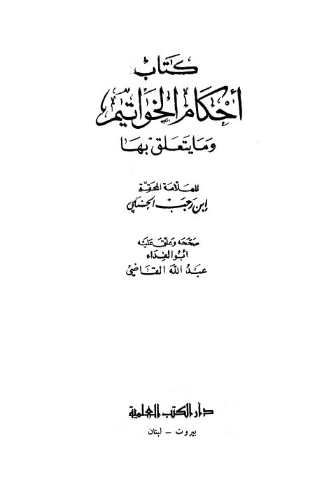
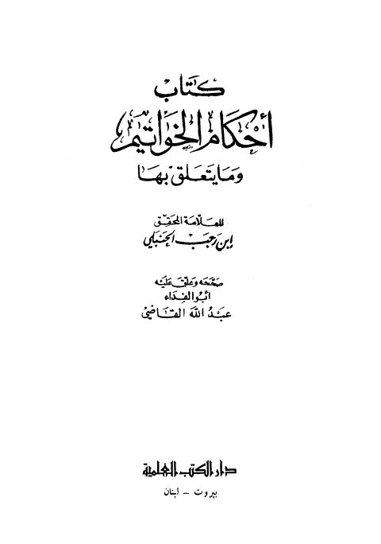
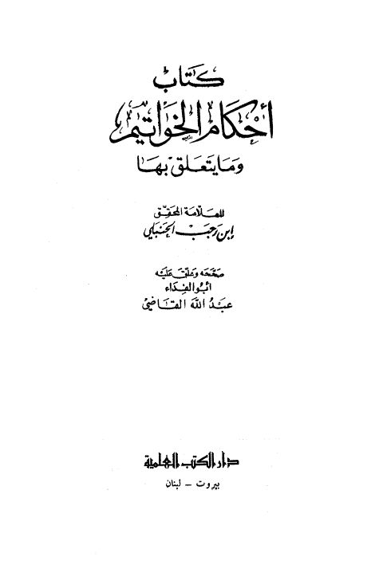

عبد الله القاضي
Author
Resources

أحكام الخواتيم وما يتعلق بها أحكام الخواتيم وما يتعلق بها عبد الرحمن بن أحمد بن رجب الحنبلي
كتاب أحكام الخواتيم وما يتعلق بها- ت. القاضي كتاب أحكام الخواتيم وما يتعلق بها- ت. القاضي عبد الرحمن البغدادي بن رجب الحنبلي
كتاب أحكام الخواتيم وما يتعلق بها- العلمية كتاب أحكام الخواتيم وما يتعلق بها- العلمية عبد الرحمن البغدادي بن رجب الحنبلي توالي التأسيس لمعالي محمد بن إدريس
توالي التأسيس لمعالي محمد بن إدريس
أحمد بن علي بن حجر العسقلاني
توالي التأسيس لمعالي محمد بن إدريس
توالي التأسيس لمعالي محمد بن إدريس
أحمد بن علي بن حجر العسقلاني